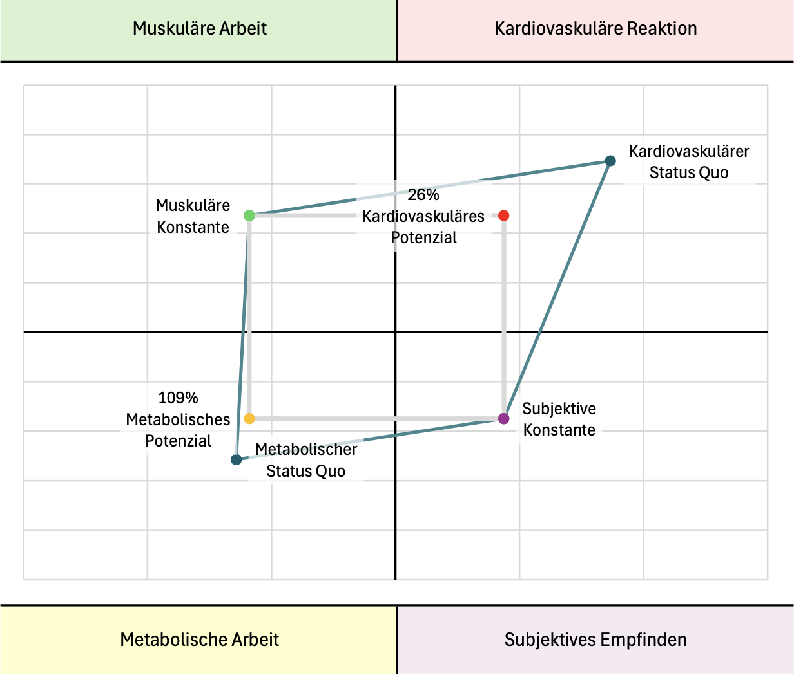

The physiological potential shows the possible development of long-term endurance, measured based on the current metabolic status quo. It includes four main aspects of fundamental performance capability: muscular, cardiovascular and metabolic performance as well as subjective perception. The key points weighted in this are VT1 as the point at which the body is measurably stressed (and thus enters a state of potential stress reaction) as well as the subjective feeling according to RPE, which should correspond to about 4 on the Borg scale. These two points are compared to the cardiovascular reaction (heart rate) as well as the point at which the body begins to perceive the load as a stressor at the cellular level (end of the maximum fat burning FatMax).
The Oxidative Stress Index OTI (following page) is a tool that can help estimate how much stress at a certain intensity/performance is maximally acceptable for the body in one day before training becomes a risk factor for cell damage and destructive processes. Its application can help to better understand stress and recovery times and adapt them to individual needs.
Status Quo and Potential in Numbers:
Muscular Constant / Beginning of stress-relevant load:
11.8 km/h
Corresponding subjective perception RPE on the Borg scale 1-10:
4 RPE
Cardiovascular reaction to muscular constant:
163 bpm
Linear, cardiovascular potential in percent:
26%
Target heart rate (Maximum Sub-Stress Target Heartrate SubSHMax):
120 bpm
Maximum, Metabolic Work (cellular stress threshold CST):
12.9 km/h
Exhaustion of metabolic potential in percent:
109%
Target performance for cellular stress threshold CST:
11.8 km/h
Visualization of Performance Intensity, Metabolic Work and Potential:

To increase the metabolic potential and exhaust it ideally, training should focus on implementing the areas of both sub-stress thresholds (SubSHMax and end of FatMax CST). The closer the corresponding performance and cardiovascular reaction approach each other, the more the potential is exhausted. An overview of the metabolic stress can be found in the preceding substrate kinetics and the calculations for oxygen tolerance on the following page.